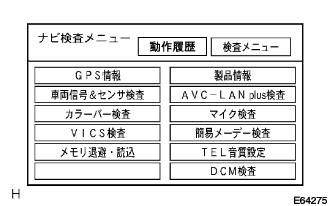

参照)参照)参照)
参照)参照)参照)G-BOOKシステム データ通信モジュール異常 |
参照)参照)参照)| 手順1 | 現象確認 |
表示メッセージに応じた確認事項の処置を行い、不具合が再現するか確認する。
| 表示メッセージ | 原因 | 確認事項 |
|---|---|---|
| 回線が混み合っている等により表示ができませんしばらく待ってから操作してください(*1) |
| しばらくしてから場所を変え、再度操作を行い不具合が再現することを確認する |
| 通信の準備をしています このまましばらくお待ちください(*2) | 車載機に電源が入った直後に操作しようとした場合、システムの起動中(ブラウザ立上りおよびデータ通信モジュールとのネゴシエーション)である場合があり、その時に表示される | しばらくしてから再度操作を行い不具合が再現することを確認する |
| 手順2 | ダイアグノーシス起動 |
ダイアグノーシスを起動する。(要領は参照)
| 手順3 | 無線通信（電波状況） |
“検査メニュー”を選択する。
“ナビ検査””を選択する。
|  |
“DCM検査”を選択する。
参照） |
“無線通信”を選択する。
電波状況の結果を確認する。
|
| ||||
| NG | |
| 手順4 | テレホンアンテナ単体点検 |
テレホンアンテナのコード部を目視で点検し、コードに鋭角な折れ、曲りなどがないことを確認する。
|
| ||||
| OK | |
| 手順5 | テレマティクストランシーバ交換（データ通信モジュール） |
| ||
| 手順6 | 無線通信（無線通信検査） |
検査開始スイッチを押す。
無線通信検査結果を確認する。
|
| ||||
| OK | |
| 手順7 | G-BOOKサポートセンター問合せ確認シート記入 |
G-BOOKサポートセンター問合せ確認シートを記入する。(要領は参照)
| ||